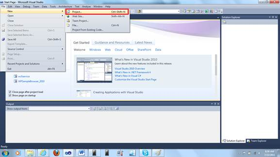
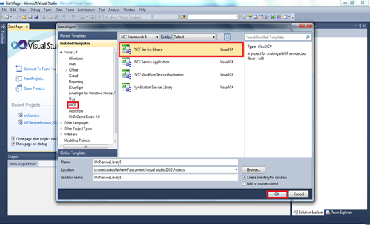
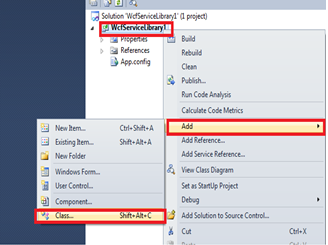
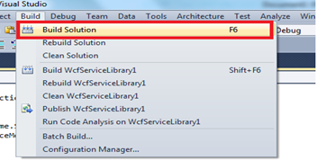
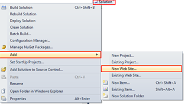
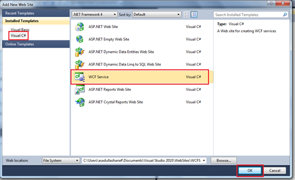
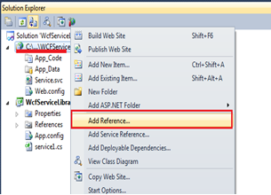
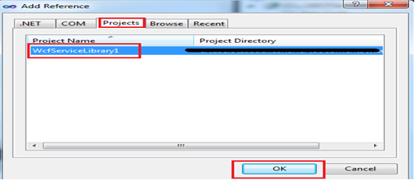
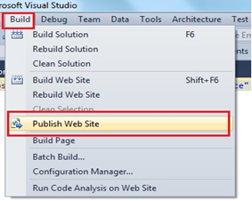
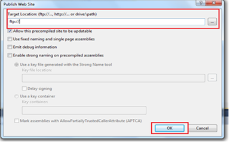

WCF Data binding is the process of populating the data/items through Web dynamically when the page/control is being loaded. WCF Data Binding requires an internet connection to load the items. It works by configuring the service reference in the client side application.
The following are the requirements to deploy a WCF binding:
1. Create a WCF service library
2. Create a Service site
3. Host in a server
4. Configure the client side Service reference of the hosted service site
5. Sample code to fetch and populate the control

Figure 146: Creating a new project
Create a WCF Service Library
1. Open visual studio, file-> new-> project
2. Then select the WCF tab, and select WCF Service Library

Figure 147: Create a Wcf Library
3. Create new class and add the following code
Note: code depends upon the individual requirement

Figure 148:Adding a new class
4. Include the following namespaces:
|
[C#] using System.Runtime.Serialization; using System.ServiceModel;
|
5. Add the following sample code:
|
[C#]
namespace WcfServiceLibrary1 { [DataContract] // annotate the field public class my { [DataMember] public int a; // variables
}
[ServiceContract] // annotate the interface public interface Imyservice { [OperationContract] void setdata(my m); // function to receive the data of type my(class)
[OperationContract] List<my> getdata(my m);
}
[ServiceBehavior(InstanceContextMode = InstanceContextMode.Single)] // to have only single instance mode running in the host. public class myservice : Imyservice { List<my> obj = new List<my>();
public void setdata(my m) { obj.Add(m); // method to add new value }
public List<my> getdata() { return obj; // method to get the values }
}
}
|
6. Build the service Library

Figure 149: Build the Solution
7. Add a new web service by, Right Click the Solution and select Add and then select New Website.

Figure 150: Adding new Website to the Solution
8. Select the type as WCF Service

Figure 151: Adding a WCF Service Website
9. Refer the WCF service library to the newly added project, RightClick à Add Reference

Figure 152: Refer the Service Library
10. In Add Reference Window

Figure 153: Selecting the Reference
11. Publish the Wcf Service website at your hosting space. Once your website is published the service reference link to be added at the client site application is automatically generated.
To Publish the Website , Build à Publish, a windows appears, specify the publish type, credentials and location ( web address).

Figure 154: Publishing the Web Service

Figure 155: Selecting the Publish type
The above are the steps to create and host a WCF service application which enables to bind the data dynamically from a website.